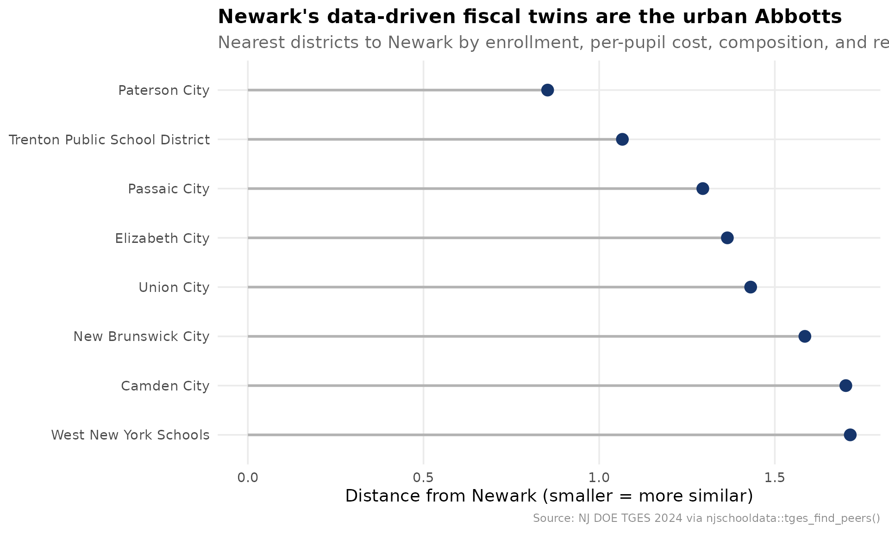
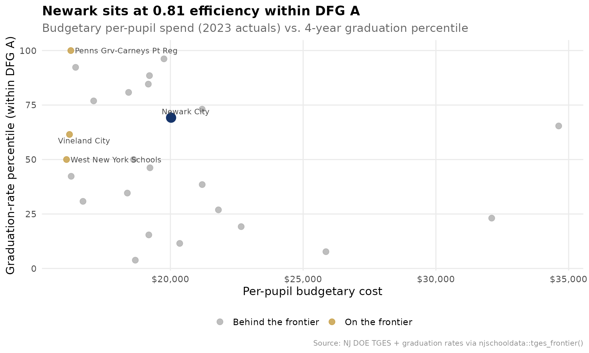
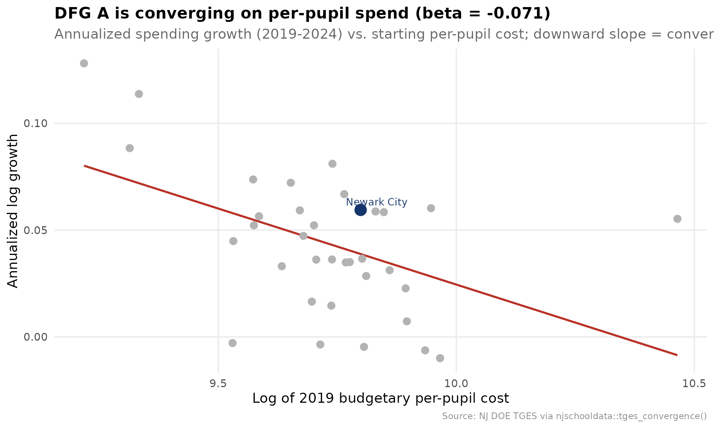
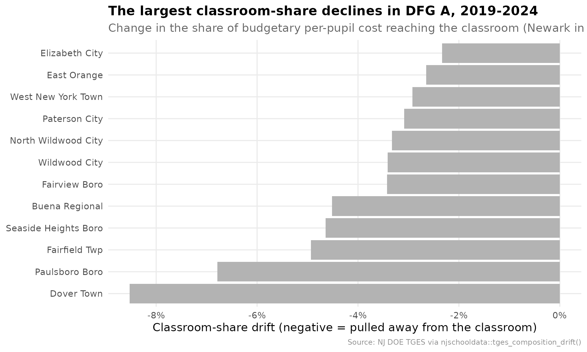
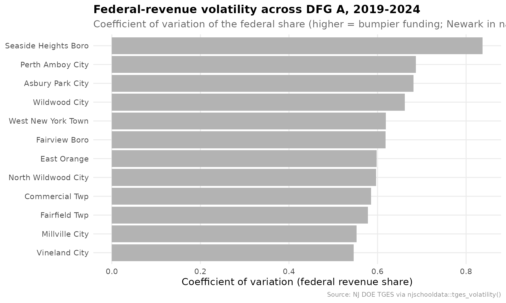
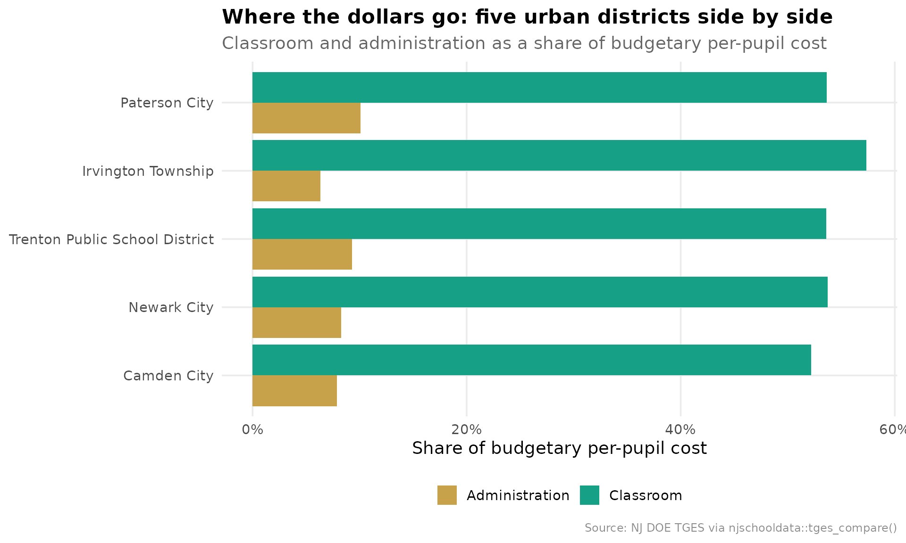

Newark on the Efficiency Frontier: Do the Dollars Pay Off?
Source:vignettes/newark-efficiency-frontier.Rmd
newark-efficiency-frontier.Rmd
library(njschooldata)
library(ggplot2)
library(dplyr)
library(tidyr)
library(scales)
options(timeout = max(600, getOption("timeout")))
theme_nj <- function() {
theme_minimal(base_size = 14) +
theme(
plot.title = element_text(face = "bold", size = 16),
plot.subtitle = element_text(color = "gray40"),
plot.caption = element_text(color = "gray55", size = 9),
panel.grid.minor = element_blank(),
legend.position = "bottom"
)
}
nwk_navy <- "#16356B"
nwk_gold <- "#C8A14B"
nwk_teal <- "#16A085"
nwk_red <- "#B83227"
peer_gray <- "gray70"
NEWARK <- "3570"The companion brief, What Did
Newark’s Gains Cost?, benchmarks Newark against District Factor
Group A one indicator at a time. This one asks the harder,
cross-district question MarGrady Research left open:
outcomes rose, but were the dollars efficient? Answering that
needs tools that reason across districts at once, not one rank at a
time. This brief uses the comparative layer of njschooldata
built for exactly that:
-
tges_find_peers()builds Newark’s data-driven peer set instead of assuming DFG. -
tges_frontier()scores every district against the spend-versus-outcome efficiency frontier. -
tges_gap_cost()turns a peer gap into real dollars. -
tges_convergence()asks whether DFG A spending is converging. -
tges_composition_drift()tracks where the budget moved. -
tges_volatility()flags fragile funding. -
tges_compare()lines the big cities up side by side.
Everything rides on the Taxpayers’ Guide to Educational Spending (TGES) joined to NJ DOE graduation outcomes. TGES is district-level, so this is a screen that says where to look, not a verdict.
# One multi-year object drives the brief; the 2024 guide is the latest snapshot.
tgm <- fetch_many_tges(2019:2024)
#> [1] 2019
#> [1] 2020
#> [1] 2021
#> [1] 2022
#> [1] 2023
#> [1] 2024
tg24 <- tgm[["2024"]]
# Graduation outcomes for the efficiency frontier: 4-year rate, district level,
# total cohort, ranked within DFG A. district_id is the 4-digit code TGES uses.
grate23 <- fetch_grad_rate(2023, methodology = "4 year") %>%
add_dfg() %>%
filter(dfg == "A", is_district, subgroup == "total") %>%
grate_percentile_rank(peer_type = "dfg")1. Who are Newark’s real peers?
DFG A is a 1990s census construct of 37 districts. But which ones are
structurally like Newark today, on enrollment, spending, and
how the budget is funded? tges_find_peers() standardizes
those features and returns the nearest districts by distance. The answer
is not all 37 DFG A districts, it is the big urban systems
specifically.
peers <- tges_find_peers(tg24, NEWARK, n = 8)
stopifnot(nrow(peers) > 1)
peers %>%
select(district_name, dfg, distance, ade, budgetary_pp, local_share)
#> # A tibble: 9 × 6
#> district_name dfg distance ade budgetary_pp local_share
#> <chr> <chr> <dbl> <dbl> <dbl> <dbl>
#> 1 Newark City A 0 41540 24253 0.098
#> 2 Paterson City A 0.853 24858 20239 0.09
#> 3 Trenton Public School District A 1.07 15053 21705 0.054
#> 4 Passaic City A 1.30 11845 24932 0.038
#> 5 Elizabeth City A 1.36 28494 21211 0.084
#> 6 Union City A 1.43 12879 21019 0.053
#> 7 New Brunswick City A 1.59 9632 24312 0.132
#> 8 Camden City A 1.70 7076 28230 0.033
#> 9 West New York Schools A 1.71 8506 19641 0.099
peer_plot <- peers %>%
filter(!is_focal) %>%
mutate(district_name = reorder(district_name, -distance))
ggplot(peer_plot, aes(x = distance, y = district_name)) +
geom_segment(aes(xend = 0, yend = district_name), color = peer_gray, linewidth = 1) +
geom_point(color = nwk_navy, size = 4) +
labs(
title = "Newark's data-driven fiscal twins are the urban Abbotts",
subtitle = "Nearest districts to Newark by enrollment, per-pupil cost, composition, and revenue mix",
x = "Distance from Newark (smaller = more similar)", y = NULL,
caption = "Source: NJ DOE TGES 2024 via njschooldata::tges_find_peers()"
) +
theme_nj()
Paterson, Trenton, Passaic, Elizabeth, and Union City sit closest, every one a DFG A city. The peer set the data picks is exactly the set a Newark analyst would defend by hand, which is the point: now it is reproducible.
2. The efficiency frontier
Here is the question MarGrady could not answer.
tges_frontier() plots per-pupil spend against the
graduation-rate percentile within DFG A, then scores each district
against the free-disposal-hull frontier: the set of districts
that hit at least a given outcome for the least money. A score of 1.0
means a district is on the frontier; 0.81 means another district reaches
its outcome for 81% of its spend.
spend23 <- tg24$CSG1 %>% filter(calc_type == "Actuals", end_year == 2023)
frontier <- tges_frontier(spend23, grate23,
outcome_col = "grad_rate_percentile", peer = "dfg")
stopifnot(nrow(frontier) > 0)
frontier %>%
arrange(efficiency_score) %>%
select(district_name, spend, outcome, efficiency_score,
reference_district_name, excess_spend) %>%
head(8)
#> # A tibble: 8 × 6
#> district_name spend outcome efficiency_score reference_district_name
#> <chr> <dbl> <dbl> <dbl> <chr>
#> 1 Perth Amboy City 34625 65.4 0.469 Penns Grv-Carneys Pt Reg
#> 2 Asbury Park City 32102 23.1 0.501 West New York Schools
#> 3 Camden City 25858 7.7 0.622 West New York Schools
#> 4 Passaic City 22666 19.2 0.710 West New York Schools
#> 5 Wildwood City 21809 26.9 0.738 West New York Schools
#> 6 Atlantic City 21198 38.5 0.759 West New York Schools
#> 7 East Orange 21196 73.1 0.767 Penns Grv-Carneys Pt Reg
#> 8 New Brunswick City 20351 11.5 0.790 West New York Schools
#> # ℹ 1 more variable: excess_spend <dbl>
fr_plot <- frontier %>%
mutate(is_newark = district_id == NEWARK)
newark_row <- fr_plot %>% filter(is_newark)
ggplot(fr_plot, aes(x = spend, y = outcome)) +
geom_point(aes(color = on_frontier), size = 3, alpha = 0.85) +
geom_point(data = newark_row, color = nwk_navy, size = 5) +
ggrepel::geom_text_repel(
data = bind_rows(newark_row, filter(fr_plot, on_frontier)),
aes(label = district_name), size = 3.4, color = "gray25", max.overlaps = 20
) +
scale_color_manual(values = c(`TRUE` = nwk_gold, `FALSE` = peer_gray),
labels = c(`TRUE` = "On the frontier", `FALSE` = "Behind the frontier"),
name = NULL) +
scale_x_continuous(labels = label_dollar()) +
labs(
title = sprintf("Newark sits at %.2f efficiency within DFG A",
newark_row$efficiency_score),
subtitle = "Budgetary per-pupil spend (2023 actuals) vs. 4-year graduation percentile",
x = "Per-pupil budgetary cost", y = "Graduation-rate percentile (within DFG A)",
caption = "Source: NJ DOE TGES + graduation rates via njschooldata::tges_frontier()"
) +
theme_nj()
Newark lands at 0.81: Penns Grv-Carneys Pt Reg reaches at least Newark’s graduation percentile for $3,776 per pupil less. Union City is the standout, posting near the top of DFG A on graduation while spending below the middle. The districts in the lower right, spending the most for middling outcomes, are where a cost-effectiveness review would start.
3. What would closing the classroom-spending gap cost?
Newark sends a smaller share of its budget to the classroom than the
DFG A median. tges_gap_cost() translates that share gap
into dollars, both per pupil and across Newark’s enrollment.
gap <- tges_gap_cost(tg24, NEWARK, metric = "classroom_share",
target = "median", peer = "dfg")
stopifnot(nrow(gap) == 1)
gap %>%
select(focal_value, target_value, gap, budgetary_pp,
per_pupil_gap_dollars, ade, total_gap_dollars)
#> # A tibble: 1 × 7
#> focal_value target_value gap budgetary_pp per_pupil_gap_dollars ade
#> <dbl> <dbl> <dbl> <dbl> <dbl> <dbl>
#> 1 0.537 0.566 0.0292 24253 709 41540
#> # ℹ 1 more variable: total_gap_dollars <dbl>Newark routes 53.7% of its budgetary per-pupil cost to the classroom against a DFG A median of 56.6%. Reaching that median would take about $709 per pupil, or roughly $29,460,231 district-wide at current enrollment. That single number reframes the abstract share gap as a budget line.
4. Is DFG A converging on spending?
Are the highest-need districts drifting toward a common per-pupil
cost, or are the gaps widening? tges_convergence()
regresses each district’s spending growth on its starting level. A
negative slope (beta) means the lower-spending districts grew faster,
i.e. the group is converging.
conv <- tges_convergence(tgm, peer = "dfg")
conv_a <- conv %>% filter(peer_group == "A")
stopifnot(nrow(conv_a) > 0)
conv %>%
distinct(peer_group, beta, beta_pvalue, r_squared, converging, n_districts) %>%
arrange(peer_group)
#> # A tibble: 9 × 6
#> peer_group beta beta_pvalue r_squared converging n_districts
#> <chr> <dbl> <dbl> <dbl> <lgl> <int>
#> 1 A -0.0711 0.00412 0.224 TRUE 35
#> 2 B -0.0725 0.000248 0.208 TRUE 60
#> 3 CD -0.0609 0.00329 0.149 TRUE 56
#> 4 DE -0.0536 0.000133 0.182 TRUE 75
#> 5 FG -0.0696 0.0000000166 0.317 TRUE 86
#> 6 GH -0.0723 0.000320 0.175 TRUE 70
#> 7 I -0.0195 0.0480 0.0432 TRUE 91
#> 8 J -0.0411 0.237 0.0767 FALSE 20
#> 9 NA -0.0335 0.000172 0.175 TRUE 76
beta_a <- conv_a$beta[1]
conv_a <- conv_a %>% mutate(is_newark = district_id == NEWARK)
ggplot(conv_a, aes(x = log_start_value, y = growth)) +
geom_smooth(method = "lm", se = FALSE, color = nwk_red, linewidth = 1) +
geom_point(color = peer_gray, size = 3) +
geom_point(data = filter(conv_a, is_newark), color = nwk_navy, size = 5) +
ggrepel::geom_text_repel(
data = filter(conv_a, is_newark), aes(label = district_name),
color = nwk_navy, size = 3.6
) +
labs(
title = sprintf("DFG A is converging on per-pupil spend (beta = %.3f)", beta_a),
subtitle = "Annualized spending growth (2019-2024) vs. starting per-pupil cost; downward slope = convergence",
x = "Log of 2019 budgetary per-pupil cost", y = "Annualized log growth",
caption = "Source: NJ DOE TGES via njschooldata::tges_convergence()"
) +
theme_nj()
The slope is negative and significant: lower-spending DFG A districts grew their per-pupil cost faster than the high-spenders, so the band is compressing. Newark, already near the middle of DFG A spending, grew about in line with where that trend puts it.
5. Where did Newark’s budget drift?
tges_composition_drift() measures how each spending
share moved between two years and ranks the move against peers. The
classroom share is the one that matters most for the efficiency
story.
drift <- tges_composition_drift(tgm, peer = "dfg")
drift_a <- drift %>% filter(dfg == "A")
stopifnot(nrow(drift_a) > 0)
drift_a %>%
arrange(classroom_share_drift) %>%
select(district_name, classroom_share_start, classroom_share_end,
classroom_share_drift, drift_percentile) %>%
head(8)
#> # A tibble: 8 × 5
#> district_name classroom_share_start classroom_share_end classroom_share_drift
#> <chr> <dbl> <dbl> <dbl>
#> 1 Dover Town 0.647 0.562 -0.0852
#> 2 Paulsboro Boro 0.578 0.510 -0.0678
#> 3 Fairfield Twp 0.678 0.629 -0.0493
#> 4 Seaside Heigh… 0.618 0.572 -0.0464
#> 5 Buena Regional 0.592 0.546 -0.0452
#> 6 Fairview Boro 0.598 0.564 -0.0342
#> 7 Wildwood City 0.594 0.560 -0.0341
#> 8 North Wildwoo… 0.575 0.542 -0.0332
#> # ℹ 1 more variable: drift_percentile <dbl>
drift_plot <- drift_a %>%
arrange(classroom_share_drift) %>%
slice(1:12) %>%
mutate(district_name = reorder(district_name, classroom_share_drift),
is_newark = district_id == NEWARK)
ggplot(drift_plot, aes(x = classroom_share_drift, y = district_name, fill = is_newark)) +
geom_col() +
scale_fill_manual(values = c(`TRUE` = nwk_navy, `FALSE` = peer_gray), guide = "none") +
scale_x_continuous(labels = label_percent(accuracy = 1)) +
labs(
title = "The largest classroom-share declines in DFG A, 2019-2024",
subtitle = "Change in the share of budgetary per-pupil cost reaching the classroom (Newark in navy)",
x = "Classroom-share drift (negative = pulled away from the classroom)", y = NULL,
caption = "Source: NJ DOE TGES via njschooldata::tges_composition_drift()"
) +
theme_nj()
6. How fragile is the funding?
A district that funded recurring costs on a one-time federal bump is
exposed when the money expires. tges_volatility() ranks how
much each district’s federal revenue share whipsawed across the ESSER
years.
vol <- tges_volatility(tgm, metric = "federal_share", peer = "dfg", min_years = 3)
vol_a <- vol %>% filter(dfg == "A")
stopifnot(nrow(vol_a) > 0)
vol_a %>%
arrange(desc(vol_percentile)) %>%
select(district_name, mean_value, cv, max_abs_yoy, vol_percentile) %>%
head(8)
#> # A tibble: 8 × 5
#> district_name mean_value cv max_abs_yoy vol_percentile
#> <chr> <dbl> <dbl> <dbl> <dbl>
#> 1 Seaside Heights Boro 0.0955 0.837 NA 100
#> 2 Perth Amboy City 0.0507 0.686 1.88 97.3
#> 3 Asbury Park City 0.0865 0.681 1.29 94.6
#> 4 Wildwood City 0.0968 0.662 1.80 91.9
#> 5 West New York Town 0.067 0.619 1.16 89.2
#> 6 Fairview Boro 0.066 0.618 1.79 86.5
#> 7 East Orange 0.0593 0.598 1.36 83.8
#> 8 North Wildwood City 0.0498 0.597 1.53 81.1
vol_plot <- vol_a %>%
arrange(desc(cv)) %>%
slice(1:12) %>%
mutate(district_name = reorder(district_name, cv),
is_newark = district_id == NEWARK)
ggplot(vol_plot, aes(x = cv, y = district_name, fill = is_newark)) +
geom_col() +
scale_fill_manual(values = c(`TRUE` = nwk_navy, `FALSE` = peer_gray), guide = "none") +
labs(
title = "Federal-revenue volatility across DFG A, 2019-2024",
subtitle = "Coefficient of variation of the federal share (higher = bumpier funding; Newark in navy)",
x = "Coefficient of variation (federal revenue share)", y = NULL,
caption = "Source: NJ DOE TGES via njschooldata::tges_volatility()"
) +
theme_nj()
7. The counterfactual cities
Finally, tges_compare() lines the big urban systems up
on the headline fiscal metrics, so different reform strategies sit next
to each other.
cities <- c(NEWARK, "0680", "5210", "4010", "2330") # Newark, Camden, Trenton, Paterson, Jersey City
scorecard <- tges_compare(tg24, district_codes = cities)
stopifnot(nrow(scorecard) >= 1)
scorecard %>%
select(district_name, total_pp, classroom_share, local_share,
federal_share, student_admin_ratio, excess_surplus_flag)
#> # A tibble: 5 × 7
#> district_name total_pp classroom_share local_share federal_share
#> <chr> <dbl> <dbl> <dbl> <dbl>
#> 1 Newark City 33730 0.537 0.098 0.108
#> 2 Camden City 45998 0.522 0.033 0.136
#> 3 Trenton Public School Dist… 30286 0.536 0.054 0.078
#> 4 Paterson City 31014 0.536 0.09 0.101
#> 5 Irvington Township 32173 0.574 0.089 0.101
#> # ℹ 2 more variables: student_admin_ratio <dbl>, excess_surplus_flag <lgl>
sc_plot <- scorecard %>%
select(district_name, classroom_share, administration_share) %>%
pivot_longer(-district_name, names_to = "category", values_to = "share") %>%
mutate(category = recode(category,
classroom_share = "Classroom",
administration_share = "Administration"))
ggplot(sc_plot, aes(x = share, y = reorder(district_name, share), fill = category)) +
geom_col(position = "dodge") +
scale_x_continuous(labels = label_percent(accuracy = 1)) +
scale_fill_manual(values = c(Classroom = nwk_teal, Administration = nwk_gold), name = NULL) +
labs(
title = "Where the dollars go: five urban districts side by side",
subtitle = "Classroom and administration as a share of budgetary per-pupil cost",
x = "Share of budgetary per-pupil cost", y = NULL,
caption = "Source: NJ DOE TGES via njschooldata::tges_compare()"
) +
theme_nj()
The scorecard is the assembly point for the whole brief: per-pupil totals, the classroom and administration shares, how much of each budget is local property tax versus state aid, the administrative ratio, and the surplus flag, one row per city. Different strategies, same peer tier, one table.
sessionInfo()
#> R version 4.6.0 (2026-04-24)
#> Platform: x86_64-pc-linux-gnu
#> Running under: Ubuntu 24.04.4 LTS
#>
#> Matrix products: default
#> BLAS: /usr/lib/x86_64-linux-gnu/openblas-pthread/libblas.so.3
#> LAPACK: /usr/lib/x86_64-linux-gnu/openblas-pthread/libopenblasp-r0.3.26.so; LAPACK version 3.12.0
#>
#> locale:
#> [1] LC_CTYPE=C.UTF-8 LC_NUMERIC=C LC_TIME=C.UTF-8
#> [4] LC_COLLATE=C.UTF-8 LC_MONETARY=C.UTF-8 LC_MESSAGES=C.UTF-8
#> [7] LC_PAPER=C.UTF-8 LC_NAME=C LC_ADDRESS=C
#> [10] LC_TELEPHONE=C LC_MEASUREMENT=C.UTF-8 LC_IDENTIFICATION=C
#>
#> time zone: UTC
#> tzcode source: system (glibc)
#>
#> attached base packages:
#> [1] stats graphics grDevices utils datasets methods base
#>
#> other attached packages:
#> [1] scales_1.4.0 tidyr_1.3.2 dplyr_1.2.1
#> [4] ggplot2_4.0.3 njschooldata_0.9.16
#>
#> loaded via a namespace (and not attached):
#> [1] gtable_0.3.6 xfun_0.58 bslib_0.11.0 ggrepel_0.9.8
#> [5] lattice_0.22-9 tzdb_0.5.0 vctrs_0.7.3 tools_4.6.0
#> [9] generics_0.1.4 curl_7.1.0 parallel_4.6.0 tibble_3.3.1
#> [13] pkgconfig_2.0.3 Matrix_1.7-5 RColorBrewer_1.1-3 S7_0.2.2
#> [17] desc_1.4.3 readxl_1.5.0 lifecycle_1.0.5 compiler_4.6.0
#> [21] farver_2.1.2 stringr_1.6.0 textshaping_1.0.5 janitor_2.2.1
#> [25] codetools_0.2-20 snakecase_0.11.1 htmltools_0.5.9 sass_0.4.10
#> [29] yaml_2.3.12 pillar_1.11.1 pkgdown_2.2.0 crayon_1.5.3
#> [33] jquerylib_0.1.4 cachem_1.1.0 nlme_3.1-169 tidyselect_1.2.1
#> [37] digest_0.6.39 stringi_1.8.7 purrr_1.2.2 labeling_0.4.3
#> [41] splines_4.6.0 fastmap_1.2.0 grid_4.6.0 cli_3.6.6
#> [45] magrittr_2.0.5 utf8_1.2.6 readr_2.2.0 withr_3.0.2
#> [49] bit64_4.8.2 lubridate_1.9.5 timechange_0.4.0 rmarkdown_2.31
#> [53] httr_1.4.8 bit_4.6.0 cellranger_1.1.0 ragg_1.5.2
#> [57] hms_1.1.4 evaluate_1.0.5 knitr_1.51 mgcv_1.9-4
#> [61] rlang_1.2.0 Rcpp_1.1.1-1.1 glue_1.8.1 downloader_0.4.1
#> [65] vroom_1.7.1 jsonlite_2.0.0 R6_2.6.1 systemfonts_1.3.2
#> [69] fs_2.1.0